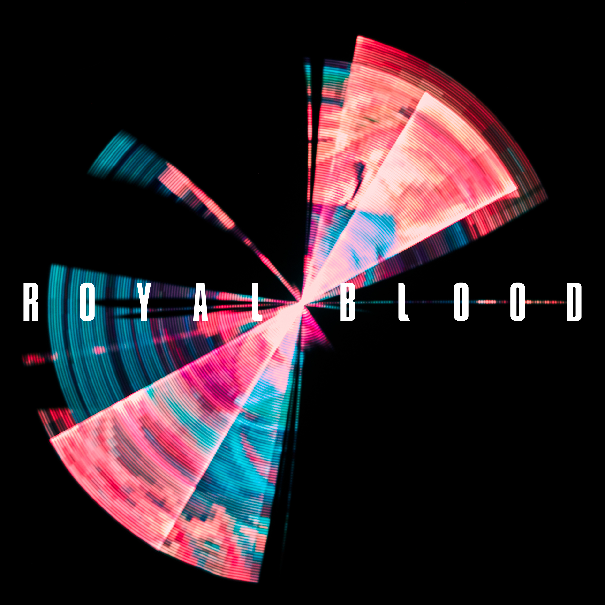

Arctic Monkeys
Arctic Monkeys are an English rock band formed in Sheffield in 2002. The group consists of Alex Turner (lead vocals, guitar, keyboards), Jamie Cook (guitar, keyboards), Nick O'Malley (bass guitar, backing vocals), and Matt Helders (drums, backing vocals).
Royal Blood

Royal Blood are an English rock duo formed by Mike Kerr (vocals, bass guitar) and Ben Thatcher (drums) in Worthing in 2011. Their sound is anchored by Kerr's unique bass playing style.